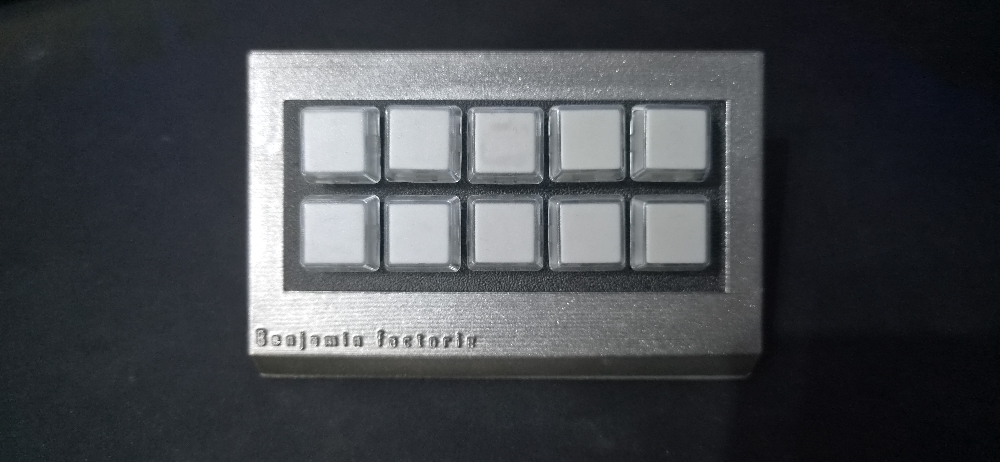
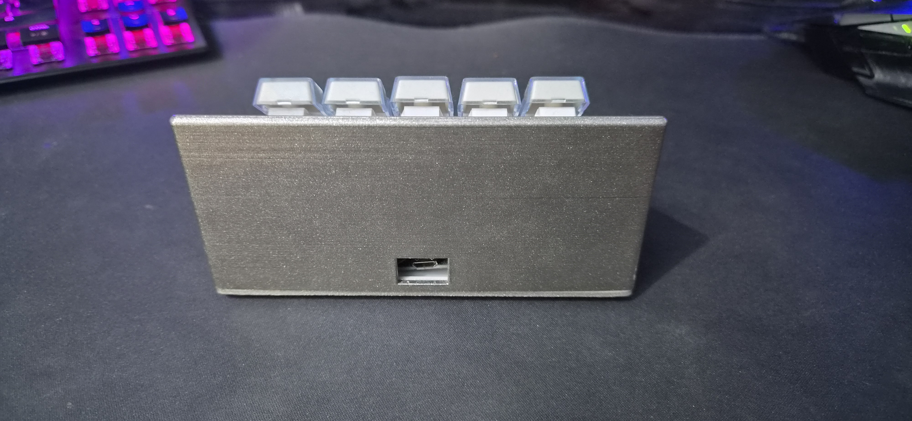
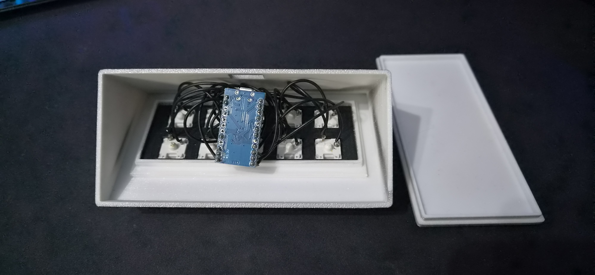
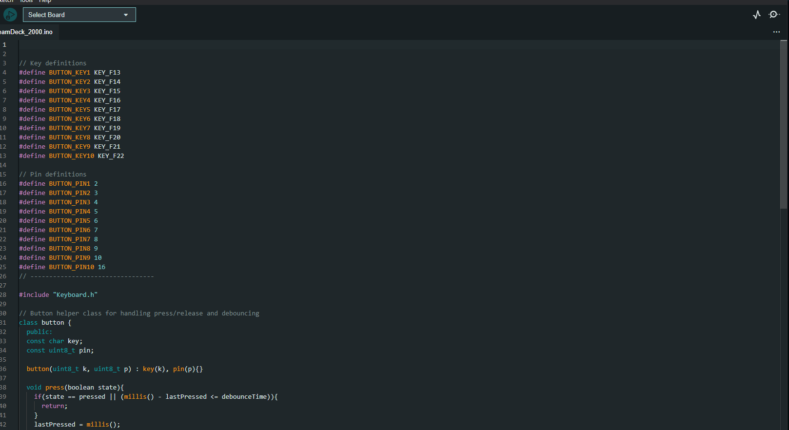

Projet Personnel — DIY 2024 – Présent
Stream Deck DIY
Arduino Pro Micro · Modules de touches · Impression 3D · Soudure
Émulation clavier HID
100% fait maison
Raccourcis personnalisables
Fabrication d'un contrôleur de touches programmable de type Stream Deck. L'Arduino Pro Micro est connecté à des modules de touches mécaniques. Cet appareil s'émule comme un clavier USB (protocole HID) et permet de lancer des raccourcis clavier personnalisés sur PC : lancer de la musique, ouvrir des applications, déclencher des macros... Le boîtier est entièrement modélisé et imprimé en 3D. Les composants sont soudés à la main.
Fonctionnalités
⌨️ Contrôle PC
- Émulation clavier USB (HID)
- Raccourcis clavier entièrement personnalisables
- Lancement d'applications
- Contrôle musique / volume
- Macros multi-touches
🔌 Électronique
- Arduino Pro Micro (ATmega32U4)
- Modules de touches mécaniques Cherry MX
- Alimentation USB directe
- Câblage matriciel des touches
- Soudure manuelle
💻 Programmation Arduino
- Code Arduino C++
- Bibliothèque HID-Project
- Gestion anti-rebond (debounce)
- Définition des touches en tableau
- Upload via Arduino IDE
🖨️ Fabrication
- Modélisation boîtier sur mesure
- Impression FDM (PLA)
- Encoches pour modules de touches
- Couvercle vissable
- Assemblage complet
Stack technique
Ce que j'ai appris
- Programmation d'un microcontrôleur Arduino avec émulation HID
- Protocole USB HID — comment un périphérique clavier communique avec le PC
- Gestion du debounce et des états de touches en code Arduino
- Câblage matriciel de touches mécaniques avec soudure
- Conception d'un boîtier 3D fonctionnel avec tolérances de fabrication
Preuves
Stream Deck DIY fonctionnel utilisé quotidiennement sur mon PC.
Code Arduino disponible sur demande.



